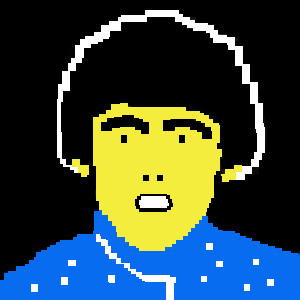

Need a simple way of showing what your audio looks like in real time? Already have a project that uses the Web Audio API? Wavy Jones is just the thing.
You can just connect Wavy Jones just as you would any other Audio Node, with the side-effect of having a nice oscilloscope that you can control the look of.
The best way to start using Wavy Jones is to grab it from GitHub
Wavy Jones relies on a couple of things, namely:
Firsty, you'll need to reference Wavy Jones after downloading it by doing something like this:
<script src="/wavy-jones.js"></script>
You'll want somewhere to show your oscillator, so just create and empty div and give it an id like so:
<div id="oscilloscope"></div>
Don't forget get to give it a height and width!
<style>
#oscilloscope {
width: 400px;
height: 200px;
}
</style>
Wavy Jones is basically a normal Audio Analyser node wearing a sparkly jacket. This means you can connect it up just like you would any other audio node.
var context = new AudioContext(),
sineWave = context.createOscillator(),
myOscilloscope = new WavyJones(context, 'oscilloscope');
sineWave.connect(myOscilloscope);
myOscilloscope.connect(context.destination);
sineWave.start(0);
It's easy to customise Wavy. You can change the thickness and colour of the line by doing something like this:
oscilloscope.lineColor = '#EE0000'; oscilloscope.lineThickness = 3;
Super.
No problem, just give me a shout on Twitter.
Find this useful? Buy me a drink with bitcoins!
Donate Bitcoins